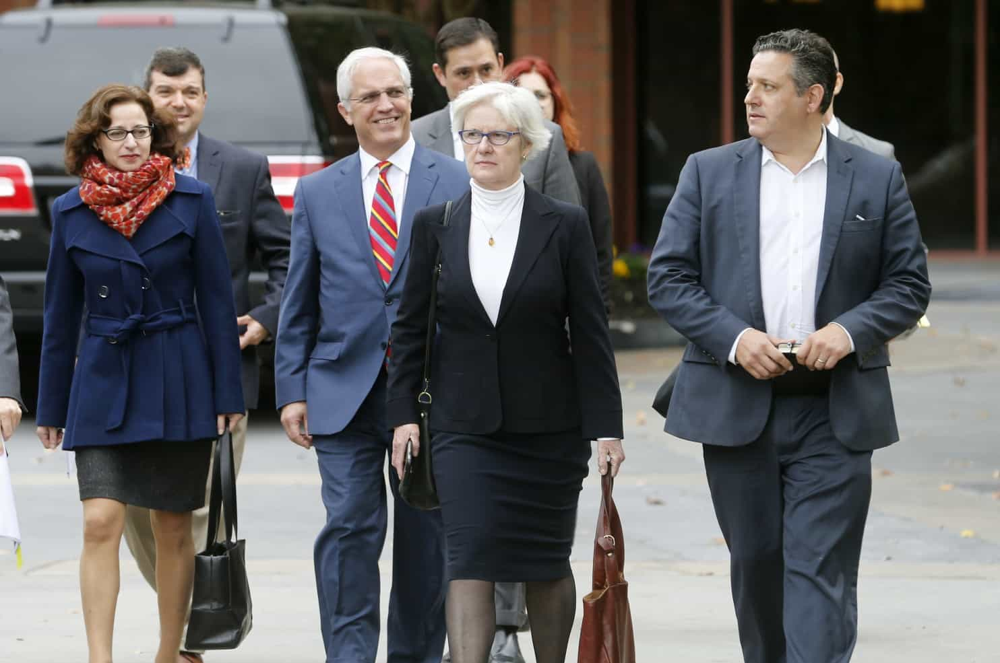
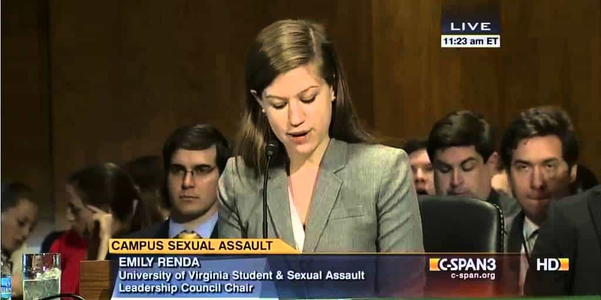

< < < Back
Federal Jury Finds UVA Rape Hoax Journalist Sabrina Rubin Erdely And Rolling Stone Liable For Defamation – Return Of Kings
A ten-person federal jury has found that Rolling Stone journalist Sabrina Rubin Erdely defamed University of Virginia dean Nicole Eramo with actual malice over a fraudulent college rape story. Rolling Stone and its parent company Wenner Media were also found to have defamed Eramo, who is seeking $7.5 million in damages, but to a lesser extent than the writer herself. Rubin Erdely’s piece conveyed that Eramo was indifferent and even callous towards the accuser, Jackie Coakley, in addition to discouraging her from reporting the “crime.” And so continues coverage of the rape hoax of the decade.
The controversy, which began with the publication of Rubin Erdely’s story in 2014, centered on a now debunked fraternity gang rape alleged by fabulist Coakley. Well before this week’s court decision, Rubin Erdely admitted to not bothering to contact the male UVA students accused of the act. These young men, via their Phi Kappa Psi fraternity, are suing separately for $25 million, a surprisingly low figure which makes Eramo’s claim look comparatively astronomical.

Sabrina Rubin Erdely, far left, arrives for court. Pictured on the right is the Deputy Managing Editor of Rolling Stone, Sean Woods, instrumental in the bogus story’s publication and who defended it later.
Because of Coakley’s limited financial position, and the respect even outed sexual assault frauds are given, Eramo is legally pursuing only Rubin Erdely, Rolling Stone, and Wenner Media for the $7.5 million. Nevertheless, Eramo’s attempts to portray herself as a victim are troubling. She was, after all, UVA’s go-to college administrator for handling “sexual violence” cases, a euphemism for the organizer of what are basically kangaroo courts.
Aside from Eramo, UVA President Teresa Sullivan’s actions were appalling. Giving basic credence to Jackie’s allegations, Sullivan suspended all Greek Life activities at the University of Virginia as publicity about the accusations grew. This only increased the suffering of the falsely maligned fraternity members, plus gave ammunition to the “rape culture” activists who ridiculously represent every young male on campus as a potential sexual abuser of women.
The true victims are the falsely accused young men, not Nicole Eramo
Nicole Eramo is a “victim” of the same system she helps to prop up and defend: “rape culture.”
Nicole Eramo may have been defamed, but she was also intricately involved in a UVA system that does not afford young men even the most basic procedural rights. Whilst we should be happy that she did not rush into supporting Jackie Coakley’s lies to the extent of trying to eschew police involvement, we are still not dealing with either an admirable or upstanding individual.
After extensive research, I am yet to find instances of Eramo challenging the shameful treatment of college students accused of sexual assault, whether in specific instances or more broadly. She is neither a defender of these young men nor some kind of principled whistleblower. The only “positive” thing that can be generally said of her is that she is somewhat less prone to typical knee-jerk SJW reactions, i.e. she did try to get Jackie to talk to the police.
Again, Jackie Coakley has escaped any punishment

Stupid does not even begin to describe the man who decided to marry rape hoaxer Jackie Coakley. Thanks to Chuck Johnson and www.gotnews.com for their work in outing Coakley as a fabulist and sociopath.
Jackie Coakley is the sociopathic architect of this whole mess. Notwithstanding that Rubin Erdely and others would have gleefully found another poster girl from somewhere else in America, the degree of malice and calculation in Coakley’s actions is the worst I have seen. Even the very terrible Crystal Mangum, the black stripper who is now serving a long sentence for homicide (not false rape allegations), made her bogus accusations of racism and being gang raped much more opportunistically, after Duke lacrosse players declined her services as a stripper. Coakley’s misdeeds, however, inhabit a world of their own.
Because women like Jackie Coakley, obsessed as they are with fantasy worlds and self-victimization, have next to no money to go after in defamation suits, they need to be charged and prosecuted for crimes such as public mischief. It obviously would be better if they were charged with making a false rape claim, yet Coakley had enough self-preserving foresight to avoid talking to the police. Consequently, the system usually gives next to no remedies for discouraging outright lies about rape. To boot, The Washington Post may have savaged Rubin Erdely and Rolling Stone, but it still refuses to publish Jackie Coakley’s full name, despite all the evidence completely disproving the rape accusations.
If Nicole Eramo gets $7.5 million, the accused male UVA students deserve $7.5+ billion

Attention-seeker Emily Renda. She used Jackie Coakley’s lies to promote an agenda, not seek redress for a “victim.”
Determination of damages in the Nicole Eramo case is yet to take place and the $7.5 million claim may just have been posturing by her legal team, a high watermark figure designed to secure a smaller but nonetheless very tidy sum. At a minimum, the accused UVA students deserve 100 times more than whatever Eramo gets. Of course, Wenner Media’s coffers are nowhere near that big, but the principle remains. Compared to the mauled reputations of the witch-hunted fraternity members, Eramo suffered a slight pinprick from a broken system she has otherwise staked her career on supporting and expanding.
Other villains in this saga also need to be held to account. Chief among them is Emily Renda, a sociology major at UVA who is now completing a law degree at UC Berkeley. A “rape culture” extremist, she acted as the conduit between Coakley and Rubin Erdely. As Chuck Johnson and Got News have already demonstrated, Renda’s own “rape survivor” story has changed. Biased “journalists” such as Anna Merlan, formerly of Jezebel, additionally promoted the UVA hoax and were greatly upset when the gang rape was found not to have taken place. So many supporting actors created this mess.
Let’s hope that the heavy legal blows against Rubin Erdely, Rolling Stone, and, obliquely, Jackie Coakley’s lies continue with the UVA fraternity defamation suit. Only significant financial and legal hardship, not the pangs of conscience, will stop SJWs and their enablers from attempting to ruin the lives of innocent men.
Read More: Why Hasn’t Jackie Coakley Been Punished For Starting The Biggest Rape Hoax Of The Decade?